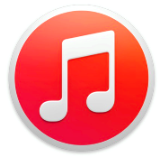
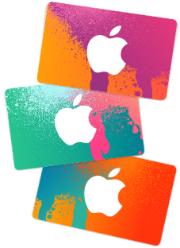
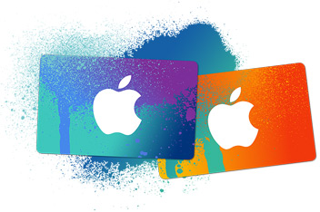

 Apple, one of the most well-known suppliers of music and household technologies, has steadily expanded into almost every aspect of our daily lives. Over the past four decades, they have released a large number of products available to both the general public and private businesses. Whether by smartphones, computers, music, or even through software, Apple has influenced the way we see technology. The current CEO of Apple is Tim Cook.
On April 1, 1976, Steve Jobs, Steve Wozniak, and Ronald Wayne created Apple. Their only product was the Apple I, a handmade CPU and RAM. The Apple I was sold in July 1976 for $666.66. Though Wayne left the company soon after, it continued to grow. By 1981, (after three generations of the Apple Computer,) Jobs developed the Macintosh. It was an instant seller after the introduction of the printer to all Apple computers. Apple flourished as a company, and stocks grew rapidly. Extending an arm out of the computer industry, they developed "iPhone", "iPod", and later "Apple TV" in 2007. It was at this time that Apple's "iTunes" database became popular. Initially created in 2001, few people used(or even knew of) it. With the introduction of the mobile platforms, however, iTunes became an explosive hit.
Over the years, more and more people have gravitated towards iTunes to purchase music, videos, and even TV show episodes. Apple does not primarily get it's money from iTunes though, as selling hardware is it's primary business. iTunes is a collection of songs, videos, and other media that can be searched for and purchased by any user. iTunes is unique in that it can offer suggestions of what to buy and gives the user previews and digital editing of almost all media types. The "suggestions" it gives is based of off collected information from listeners with like taste as well as reviews written by said listeners. Once a song (or songs) is suggested, a preview is given, which can be played indefinitely until purchase. Furthermore, a relativity new feature to iTunes, iTunes Radio, allows for continued listening to all songs on a specific genre, even if the songs are not owned.
Although iTunes itself does not have a stock, Apple does. Apple stocks are traded on NASDAQ, the largest American stock exchange. Listed as AAPL, stocks range from 110-106 on average. Apple shows extreme growth over time, as in one decade (Jan 2005 to Jan 2015,) Apple has grown from 5.493 to 107.040.This is why today's investors vie to own Apple stocks; like iTunes, they show promise.

All images property of Apple Inc.
All data collected from Apple Inc., Wikipedia, and Yahoo Finance